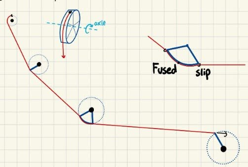
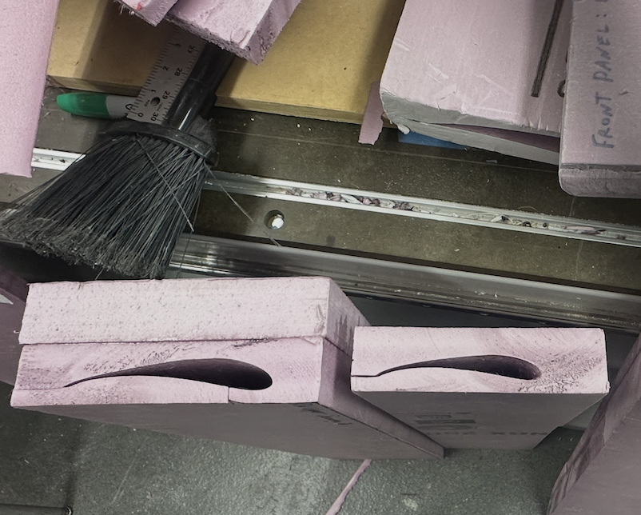

MIT Motorsports
Rear Wing and Drag Reduction System
September 2025 – Present



Summary
For the 2025–26 Formula SAE season, I designed the rear wing and drag reduction system for the MIT Motorsports MY26 car. The rear wing was intended to increase downforce while limiting the drag penalty. The drag reduction system was intended to improve airflow over the top of the car on the straights.
I replaced the previous three-element rear wing with a five-element design. The new wing added some drag, but the downforce gain was substantially larger: more than 12 points of total downforce. For the drag reduction system, I compared push-pull rods, pulleys, and belt-and-sprocket drives against the Formula SAE rules, then evaluated each option for mounting complexity, added mass, and material cost. I selected a servo-driven pulley mechanism. Computational fluid dynamics of the car with and without the system showed only a 5-point reduction in total drag. Given that limited benefit and the interfacing required with the electronics, the team deferred the drag reduction system in favor of higher-impact changes elsewhere on the car.
For the 2026–27 season, I am designing a stiffer, larger floor and diffuser running the length of the underbody. The package is intended to increase suction from ground effect and produce more downforce than last season’s car.